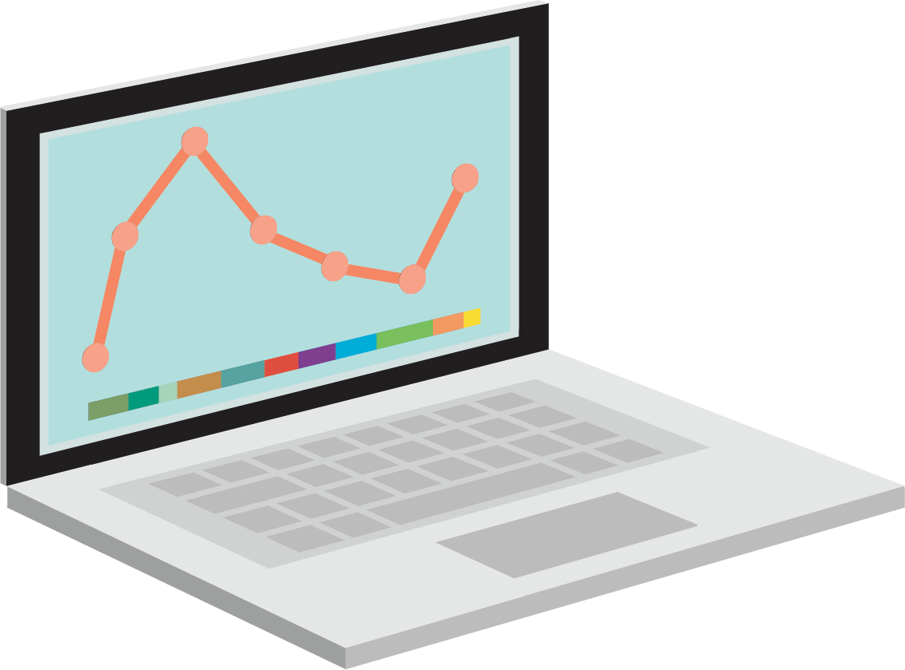
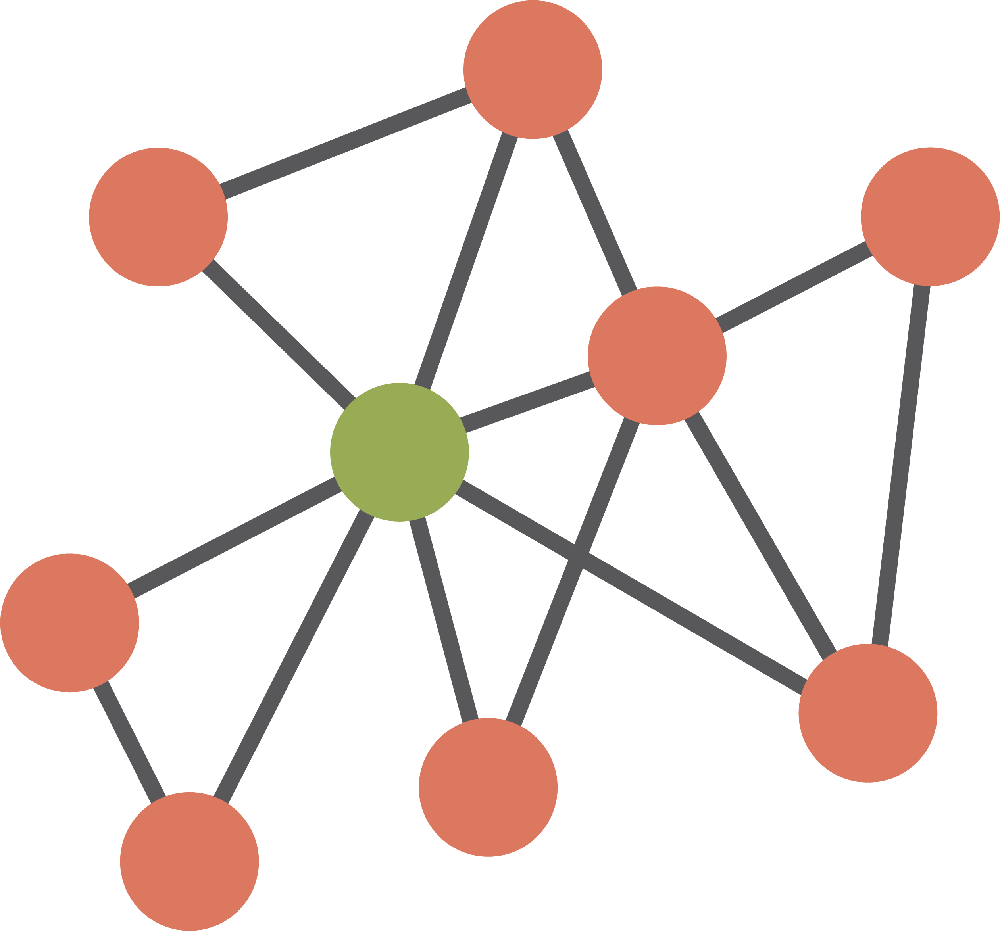

Data management plans
Invalid Date
Learning objectives
- Understand what a data management plan is
- Know why you might need a data management plan
- Know some of the components of a data management plan
Pre-requisites and related modules
No pre-requisites.
Related modules are any that discuss the creation, editing and use of data, particularly:
Data acquisition
Data preparation
Data cleaning
Data synthesis
Archiving

Plan for the session
Discuss what and why of data management plans (DMPs)
Go through a DMP (briefly = taught workshops; detail = asynchronous)
Critique a ‘real’ DMP
What is a DMP?
Document presenting how data will be managed during and after a research project
Contains details on, for example,:
the project in general
what types of data will be created and how
how will data be documented
how data will be stored, including for how long and back-ups
whether there are any relevant ethical issues to consider
Why make a DMP?
It can help you organise a big project
Prevent data loss, ease sharing of data, support community best practices
Many funders require one
Components of a DMP
Data collection
File formats
Descriptions
Estimates of volume and times
Is it reused or generated new?

Data collection
How you will generate the new data
Where data will be reused from

Data documentation
Planned file structure:
Predetermined hierarchical file structure
Visual summary that you keep up-to-date
Master (raw) files
- Always keep a copy of raw data, date-stamped, unedited
Metadata:
README (see Archiving module)
Ensure associated protocol or required software is signposted
Software / code needed to access or run the data
Domain standards used for data creation / handling
Data storage
Repositories for storage
Open file formats where possible
Indexing and versioning
How long will data be preserved for?
What licenses will data be shared under?
Ethical considerations
Ethical issues with data collection, such as:
data from human subjects
animal studies
personal, confidential, or sensitive data
Some relevant-to-palaeontology considerations:
Sample collecting permits
Museum collection restrictions
Museum accessioning
Sensitive location data
Helicopter science / indigenous data
Data security
Resources
- Animal studies: Replace, Reduce, Refine https://nc3rs.org.uk/who-we-are/3rs
- FAIR data standards https://www.gofair.foundation/fair-principles
- CARE data principles for indigenous data https://www.gida-global.org/careprinciples
- DMP templates and guidance:
Activity!
- What is wrong with this DMP?
- How would you improve this DMP?
30 mins to read, discuss, improve!
How would you fix this DMP?
What is wrong with this DMP, and how could we improve it? 1
- Data collection
File format
Estimated volumes
Any reuse, and detail on which repositories reused data are from
How will reused data be cited?
- Data documentation
More detail on metadata files and folder structure
Consider how data will be managed during the project, not just archived after
More detail on code, whether there are any proprietary file formats, etc.
How would you fix this DMP?
What is wrong with this DMP, and how could we improve it? 2
- Data storage
More detail on why those repositories, backup plans…
Local storage details, institutional servers?
Who will data be owned by?
- Ethics
- Potential museum aspects not covered
& who else has access to the data; is it just you who has management rights?